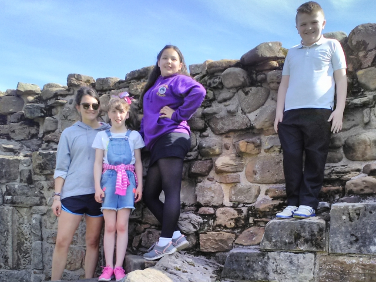
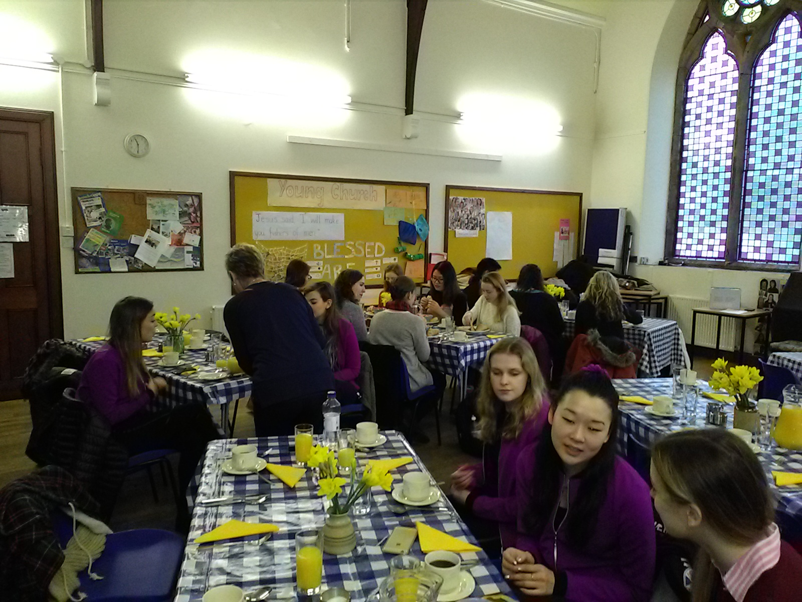

We offer 3 core services to families living in north east Fife.
These are the One-to-One Befriending Service, the Children’s Group Work Service and the Family Support Service.
We developed these services as a direct result of consulting with and listening to the children, families and partner agencies we work with.
We decided very early on that our services would not duplicate what is already out there, but complement and add value to what currently exists so that we can work in partnership with others.
Staff and volunteers are available to provide companionship and support to families who have children in the household aged 5-16 years of age with additional support needs.
These can include – isolation, Autistic Spectrum Disorders (ASD), Attention Deficit Hyperactivity Disorder (ADHD), learning disabilities, low self-esteem and confidence issues, social, emotional and behavioural difficulties, abuse, caring responsibilities, family difficulties, substance misuse, poverty and rural living.
When an external agency refers a family to us we will consider any challenges they are facing which is having an impact on their well-being.
Referral forms can be found on our forms page of this web site.
We aim to improve a child’s life chances, well-being and happiness by working in partnership with the immediate family and anyone else involved with them. Last year we were able to support 156 children and young people and 25 adults.
Family Support


Befriending

Children's Group Work

Volunteering
